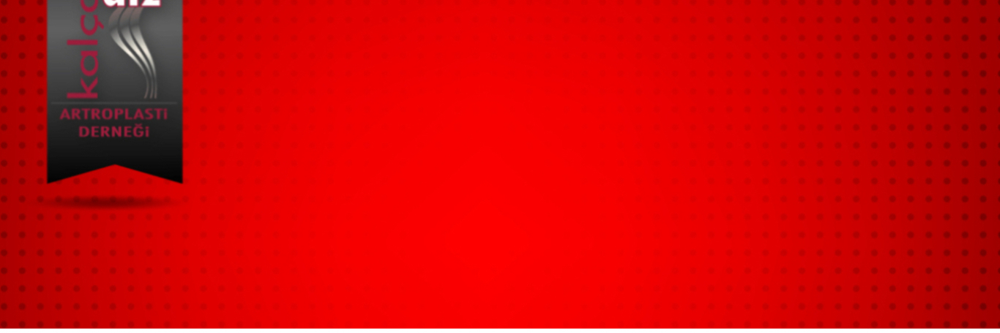

Dear Members of the Hip and Knee Arthroplasty Association,
Our Association’s Ordinary General Assembly will be held on Monday, April 14, 2025 at 11:00 at the Ankara Association Headquarters (Mutlukent, 2007 Sk. No:41 Beysukent, 06810 Çankaya/Ankara). If a quorum is not achieved, the second meeting will be held on Saturday, April 26, 2025 at 18:00 at Papillon Zeugma Antalya (Belek Tourism Center İleribaşı Mevkii, Belek, 07500 Serik/Antalya). In accordance with Article 9.2 of our Bylaws, candidates for the Board of Directors must submit their applications in writing with original (wet-ink) signatures to the association headquarters between March 14, 2025 and April 7, 2025.
The agenda of the Ordinary General Assembly Meeting is presented below.
Agenda Items:
- Opening
- Moment of Silence and National Anthem
- Election of the Presiding Committee
- Reading of the Board of Directors’ activity report
- Reading of the Financial Report
- Reading of the Audit Committee report
- Release of the Board of Directors
- Release of the Audit Committee
- Determination of membership dues
- Elections for the new Board of Directors and Audit Committee
- Requests and suggestions
Hip and Knee Arthroplasty Association Correspondence Address:
Angora Boulevard Vadikent 90 Site, 2007 Street No:41 Beysukent / ANKARA
Phone: 0312 9881792
E-mail: dernek@artroplasti.org.tr
With respect and regards,
Prof. Dr. Emre Toğrul
Chairman of the Board, Hip and Knee Arthroplasty Association
